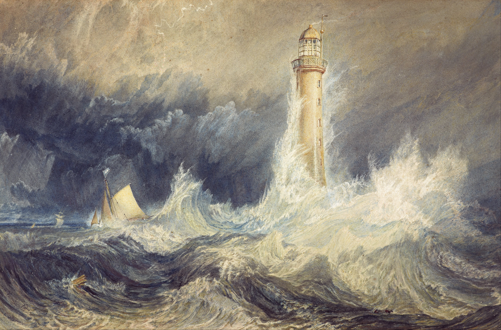
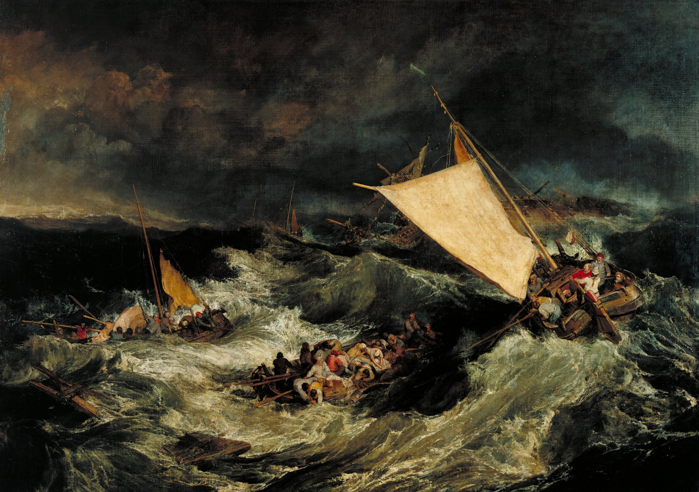

Análise das obras de arte de William Turner
O farol em meio à tempestade

A pintura retrata um farol cercado por ondas violentas e um céu carregado de nuvens.
A luz do farol contrasta com a força da tempestade, transmitindo uma sensação de resistência
e esperança diante das adversidades.
Naufrágio em alto-mar

A obra representa embarcações e tripulantes enfrentando um mar
extremamente agitado durante uma tempestade.
As ondas intensas e o céu escuro transmitem tensão,
perigo e a fragilidade humana diante da força da natureza.